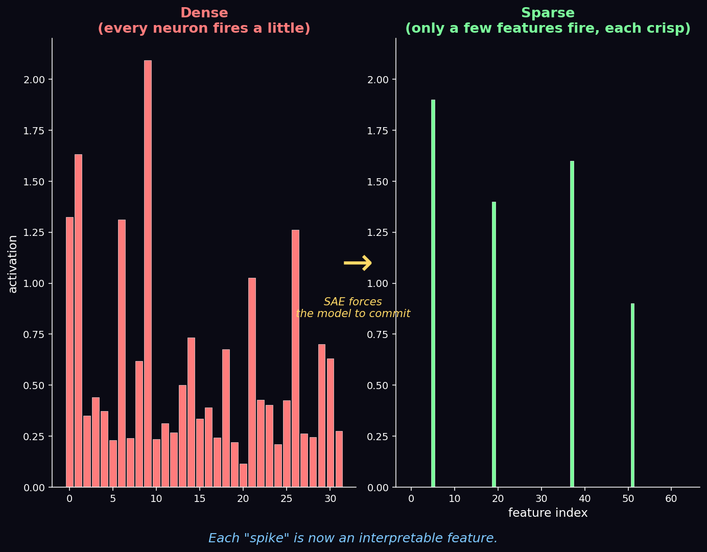
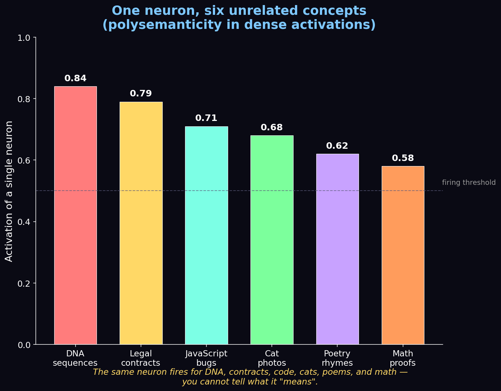
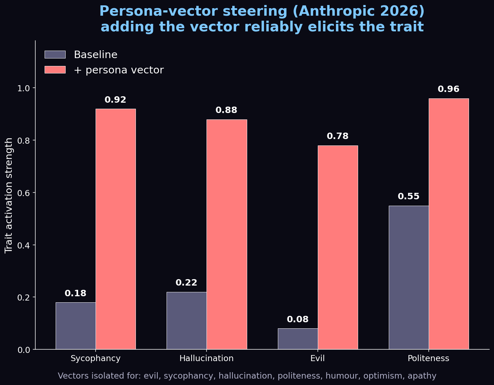

Mechanistic Interpretability & Sparse Autoencoders: Giving AI an X-Ray

Imagine you're a physician a hundred years ago. You can observe a patient's symptoms, listen to their heartbeat, and make educated guesses about what's happening inside. Then someone hands you an X-ray machine. Suddenly you don't guess — you see.
That's exactly the leap mechanistic interpretability brings to AI. For years we judged language models purely by their outputs — the probability of the next word. Ask an AI a question and it might output "Paris" with 95% probability. But why? Sparse Autoencoders (SAEs) are giving us the X-ray to finally look inside.
🎬 Watch the full 12-minute explainer:
▶️ Direct link: youtu.be/FygQSz5_fq8
The Polysemanticity Problem
The biggest obstacle to reading a model's mind is a phenomenon called polysemanticity. In a standard neural network, a single neuron doesn't represent just one concept. Because space is limited, the model constantly compresses many ideas into the same neuron.

The same neuron might fire for DNA sequences, legal contracts, JavaScript bugs, cat photos, poetry, and math proofs. You simply cannot tell what it "means" — the signal is hopelessly tangled.
The SAE Breakthrough
Enter the Sparse Autoencoder. Think of it as a high-resolution microscopic lens that deconstructs dense, messy neural activations.
The SAE acts as a strict forcing function: it takes the model's tangled, compressed thoughts and re-expresses them through a much wider but strictly limited set of active features. We call these monosemantic features — each represents one, and only one, distinct concept. By expanding the mathematical space and forcing most activations to zero, the SAE unpacks the compressed data into crystal-clear, non-overlapping signals (the bright spikes on the right of the cover image above).
The Objective Function
How does it pull this off? With a beautifully simple objective that balances two terms:
$$\mathcal{L} = \underbrace{\lVert x - \hat{x} \rVert_2^2}_{\text{reconstruction}} \;+\; \lambda \underbrace{\lVert f \rVert_1}_{\text{sparsity}}$$
- The reconstruction loss ($L_2$ norm squared) ensures no meaning is lost — the features must rebuild the original activation $x$.
- The sparsity penalty ($L_1$ norm, weighted by $\lambda$) mathematically forces the autoencoder to use as few active features as possible.

This delicate balance — perfect reconstruction plus extreme sparsity — is what untangles the knot, isolating individual, human-understandable features from the noise.
The Golden Gate Feature
A now-famous example: using an SAE on Claude 3 Sonnet, Anthropic's researchers discovered a highly specific monosemantic feature in the model's middle layers. What did it represent? The Golden Gate Bridge.
This single feature fired whenever the model encountered text, images, or even abstract references to the landmark — but not for other bridges, and not for other cities. It was the model's pure, isolated concept of the Golden Gate Bridge, pinned to a specific coordinate in its vast brain.
Individual concepts are just the nouns and verbs of thought. The real power comes from circuitry — watching features interact. The "sarcasm" feature might inhibit "politeness" while boosting "humor." By mapping these circuits, we watch artificial thought form in real time.
Feature Steering: Writing to the Model's Mind
Once you can read the model's mind, the next step is writing to it. SAE features (and persona vectors more broadly) give a direct dial for any concept the model represents.

Compare this to prompt engineering — a blunt instrument where you type words and hope. Steering is surgical. You compute a target centroid $c_{\text{target}}$ and a refusal centroid $c_{\text{refusal}}$ in the residual stream; the steering vector is simply their difference, applied at a few layers at inference time.
The recent SafeConstellations result on LLaMA-3.1-8B makes it concrete:
- Over-refusal dropped from 46.7% → 8.9% (an 81% reduction).
- MMLU utility stayed flat at 46.57.
- Added latency: ~0.2s per response.
- No retraining, no fine-tuning — just a few activation-space vectors at the right layers.
Safety: Three Pillars
The safety implications are staggering. Anthropic's persona-vector work showed three concrete applications:

- Monitor drift — measure how strongly persona vectors fire during deployment to detect personality changes the moment they happen.
- Preventative steering — inject bad vectors at training time to "vaccinate" the model against them.
- Flag training data — pre-screen documents that strongly activate evil/deception vectors.
The motto: edit the circuit, not the prompt.
From Stochastic Parrot to Auditable Intellect
For the longest time, critics dismissed LLMs as mere "stochastic parrots" — fancy autocorrect mimicking human text without real understanding. But the maps drawn by Sparse Autoencoders tell a wildly different story: a highly structured, deeply sophisticated representation of the world.
We're shifting from treating AI as a statistical parrot to an auditable, transparent digital intellect — and mathematically proving these networks build real internal models of reality. As we build ever larger systems, understanding the why behind the what is no longer academic curiosity. It's the final frontier of the AI revolution.
⏱️ Chapters
| Time | Section |
|---|---|
| 0:00 | Cracking the Black Box |
| 0:54 | Probability vs Logic |
| 1:45 | Bridge to Knowing |
| 2:33 | The Polysemanticity Problem |
| 3:21 | The SAE Breakthrough |
| 4:08 | The Objective Function |
| 4:58 | Mapping the Blueprint |
| 5:44 | The Golden Gate Feature |
| 6:25 | Circuitry of a Thought |
| 7:09 | Feature Steering |
| 8:06 | Surgical Precision: SafeConstellations |
| 9:07 | Safety: Three Pillars |
| 10:01 | Granular Alignment |
| 10:45 | Auditable Intellect |
| 11:26 | The Final Frontier |
Featured research: Anthropic's work on monosemantic features and persona vectors, and the SafeConstellations steering result on LLaMA-3.1-8B. Diagrams above are our own illustrations.
If you enjoyed this, we're brand new to YouTube — please subscribe and like; it genuinely helps us keep making these. Thanks for reading! 🙏
Cite this post
Auto-generated. Verify for your institution's requirements.